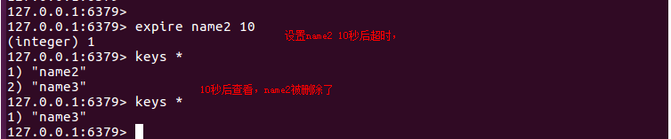

5.2Redis数据库操作
redis-cli 连接数据库
redis 默认有16个库（0-15），进入后默认在第0个库
切换数据库
select index # index为数据库标号
redis是key-value的数据结构，每条数据都是一个键值对
键的类型是字符串
值的类型分为五种：
1、字符串string
2、哈希hash
3、列表list
4、集合set
5、有序集合zset
1、字符串类型
- 字符串(string)是redis最基本的类型
- redis 默认最大能存储512MB数据
字符串类型基本操作
- set key value #如果键不存在，那么创建key，如果键存在那么更新值
设置一个一个键为name值为python的数据
set name python
setex key time value #超时时间，单位是秒
setex age 10 18 设置一个key为age，超时时间为10秒的，value为18的数据
mset 同时设置多个键值
mset key1 value1 key2 value2
同时设置键为'name'值为'linux'、键为'name1'值为'python'、键为'name2'值为'mysql'、键为'name3'值为'redis'的数据
mset name linux name1 python name2 mysql name3 redis
- append 追加值
向key为name数据追加'+python'
追加相当于value值字符串的拼接
获取值（value）
get key #get 后面加上key的值就可以取到value
mget key1 key2 key3 同时获取多个key的value值
操作key
keys * #查看所有key
keys '*m*' #查看包含m的key
exists key #判断key是否存在，存在返回1，不存在返回0
type key #查看value的类型
del key key1 key 2 #删除key
expire key seconds #给键设置超时时间，单位秒

2、哈希hash类型
Redis hash是一个string类型的field和value的映射表，hash特别适合用于存储对象。
Redis 中每个 hash 可以存储 2**32 - 1 键值对（40多亿）。
设置
hset key field value #key键,field属性,value值
hmset key field1 value1 [field2 value2 ] #同时将多个field-value(域-值)对设置到哈希表key中。
如果field值不存在则新建，如果存在则将value值更新
获取
hkeys key #获取指定键所有的属性
hget key field #获取一个属性的值
hmget key field1 field2 #获取多个属性的值
hvals key #获取所有属性的值
hgetall key #获取在哈希表中指定 key 的所有字段和值
hexists key field #查看哈希表 key 中，指定的字段是否存在。
hlen key #获取哈希表中字段的数量
删除
del key #将整个hash删除
hdel key field1 field2 #删除属性，属性对应的值会被一起删除
3、列表list类型
列表是简单的字符串列表，按照插入顺序排序。可以添加一个元素到列表的头部（左边）或者尾部（右边）
list类型的常用操作：
lpush key value1 value2 #在左侧插入数据
lpushx key value # 只有key值存在的时候才能插入数据
rpush key value1 value2 #在右侧插入数据
rpushx key value # 只有key存在时才能插入数据
linsert key before或after #在指定元素的前或后插入新元素
lpop key #移除列表第一个元素
blpop key timeout # 移除列表第一个元素，如果列表没有元素会阻塞列表直到等待超时或发现可弹出元素为止
rpop key #移除列表最后一个元素
brpop key timeout#移除列表最后一个元素， 如果列表没有元素会阻塞列表直到等待超时或发现可弹出元素为止。
llen key #获取列表长度
lrange key start stop #获取列表指定范围内的元素
lindex key index #通过索引获取列表中的元素
4、集合set类型
集合特点：无序不重复。
set类型的常用操作：
sadd key member1 [member2] #向集合中添加多个成员
scard key #获取集合的成员数
smembers key #返回集合中的所有成员
srem key member1 member2#移除集合中一个或多个成员
sdiff key1 [key2] #返回给定所有集合的差集
sinter key1 [key2] #返回给定所有集合的交集
sunion key1 [key2] #返回所有给定集合的并集
5、有序集合类型
添加元素
zadd key 权重1 值1 权重2 值2 #向有序集合添加一个或多个成员，或者更新已存在成员的分数
获取元素：
zcrad key #获取有序集合的成员数
zrange key start stop #通过索引区间返回有序集合成指定区间内的成员start、stop为元素的下标索引,索引从左侧开始，第一个元素为0
zrange key 0 -1 #表示获取有序集合的全部元素，索引可以是负数，表示从尾部开始计数，如-1表示最后一个元素
zrangebyscore key min max #返回score值在min和max之间的成员
zscore key member #返回元素member的score值
zrank key member #返回指定元素的索引值
删除元素
zrem key member1 member2 #删除指定元素
zremrangebyscore key min max #删除指定权重值之间的元素